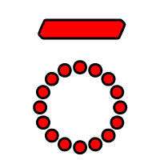
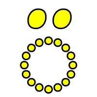
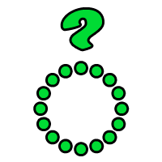
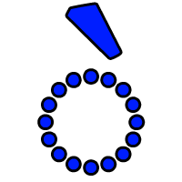
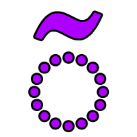

Introduction
Toaq is a tonal language which was constructed between 2013 and 2017. It possesses a simple and logical grammar which is free of exceptions. This makes the language considerably easier and enables the learner to construct meaningful sentences after a relatively short period of study. The main difficulty the learner will face is Toaq's system of tones. However, by using this course, the tones will soon become second nature.
About this course
This course is directed at people who are completely new to Toaq as well as people who already know a thing or two about Toaq and who wish to brush up on the language. The course consists of 50 lessons, which cover all of the core grammar as well as a vocabulary of more than 1000 words.
From the first lessons onward, the foundations of the language will be presented in a natural way, through idiomatic phrases. The lessons will get progressively more advanced in speed, volume and difficulty, but the progression will be smooth and natural. Allow yourself to be guided by the methodology course and you will comfortably reach your goal.
In order to use this course effectively, it is recommended that you follow certain guidelines: Learn regularly, even if it is only for 20 minutes each day. A little bit each day is better than large chunks between week-long breaks. You can work through more than one lesson per day, but it is recommended that you take a short break between the lessons and allow your mind to focus on something else for 10 minutes. Do not memorize. Learning a foreign language is better done by reading and listening to the dialogues, texts and exercises repeatedly in order to absorb the language naturally and develop an intuitive understanding. Do not panic if something does not immediately click. Relax and keep going. You will likely find that if you return to an earlier lesson a week later, the points that used to confuse you have magically cleared themselves up.
Every seventh lesson is a review lesson, which contains a summary of the grammar points learned in the previous six lessons.
Make sure to read the explanation of the pronunciation at the end of this introduction and pay attention to the pronunciation of the letters and the tones in the recordings especially during the first few days of your studies.
This is a list of all the words that appear in each lesson.
Layout of the lessons
At the top of every lesson is a text or dialogue. On the left side, the lesson text is given in Toaq, while the right side shows a translation into natural-sounding English. Wherever deemed necessary, a literal translation is given in brackets.
In the lessons, all Toaq words have colored tone marks. This is to make it easier to distinguish the tones and allows the learner to make associations based on color.
Notes
The lesson texts will often contain double-circled numbers. These point to the corresponding notes found right underneath the lesson text. The notes contain brief but important information to aid understanding of a phrase, phrase chunk or word, such as a grammar note or supplementary vocabulary.
Comprehension exercises
Each lesson comes with two kinds of exercises. The first kind consists of Toaq phrases which re-use the vocabulary of the current lesson and present it in a new context. These exercises will allow you to assess whether you have understood the vocabulary introduced up to that point. The solutions are revealed by hovering the mouse over the blanks.
Fill in the blanks
The second kind of exercise in each lesson is a fill in the blanks exercise, which is also based on the vocabulary learned thus far. In these exercises, an English sentence is given along with a Toaq sentence with blanks, into which you are to insert the appropriate Toaq words. Again the solutions can be revealed by hovering the mouse over the blanks.
Toaq Pronunciation
Toaq's alphabet consists of 25 graphemes (letters). Most of these should pose little to no challenge to an English speaker. The graphemes are:
a, b, c, ch, d, e, f, g, h, ı, j, k, l, m, n, o, p, q, r, s, sh, t, u, y, z
Compared to the English alphabet, the letters v, w and x are "missing".
Vowels
Five of the vowel letters look the same as in English, except for ı, which is missing the dot. The sixth vowel, written y, is the only unusual one from an English perspective. The pronunciations are as follows:
| a | |
| e | |
| ı | |
| o | |
| u | |
| y | |
Consonants
| b | |
| c | |
| ch | |
| d | |
| f | |
| g | |
| h | |
| j | |
| k | |
| l | |
| m | |
| n | |
| p | |
| r | |
| s | |
| sh | |
| t | |
| z | |
The consonant q is usually pronounced as English ng, but it can change its pronunciation depending on the consonant that follows:
| default pronunciation, before k, g, l, m, n, r, f, h, s, sh, and at the end of a breath group: |
|
| before t, d, c, ch, j: | same as n |
| before p, b: | same as m |
Tones
Toaq is a tonal language -- it uses changes in pitch to distinguish grammatical meaning. Toaq is unique in that every tone corresponds to a part of speech (nouns, verbs, adverbs, etc), and vice-versa. This means that the same part of speech always carries the same tone, or, in other words, that each tone uniquely identifies a word as belonging to a specific part of speech. The functions of the tones will be introduced bit by bit. For now it is enough that you are aware of their existence. Below is a table of Toaq's tones along with their pronunciation (on the dummy syllable na). There are seven tones in total:
|  | even tone | nā | |
 |
rising tone | ná | |
|  | dipping tone | nǎ | |
|  | falling tone | nả | |
| peaking tone | nâ | ||
|  | low tone | nà | |
|  | glottal tone | nã | |
Once you have made yourself familiar with the letters and the tones and have got yourself a comfortable spot, all that is left for us to do is wish you good luck with this course... and why not in Toaq:
When you are ready, proceed by clicking "continue" below.